Operating Documentation
Direction 5500113, Rev# 3
Discovery MR450 1.5T Service Methods
Module Version 7.0, Version Date 9/9/10
Operating Documentation |
| Required Persons | Preliminary Reqs | Procedure | Finalization |
|---|---|---|---|
| 1: Unified Phantom or 2: Legacy Phantom (HDx/HDxt only) | Not Applicable | 30 mins | Not Applicable |
Follow this process to prepare for the automated SNR test using the 12-Channel Single or Dual Connector Body Array Coil by GE/USAI.
| NOTE: | Coils do not ship with phantoms. Phantoms come in a unified phantom set with the MR system. |
| Item | Qty | Effectivity | Part# | Manufacturer | |
|---|---|---|---|---|---|
| Legacy Phantom Positioner Kit (Spherical Positioner, Cylindrical Positioner) | 1 | Legacy Phantom Set | 2424388, 2424357, 2424358 | - | |
| MR450 System Phantoms | 1 | Legacy Phantom Set | 2135652, 2274476, 2135650 | - | |
| TL Unified Phantom | 2 | Unified Phantom Set | 5343347 | - | |
| Condition | Reference | Effectivity |
|---|---|---|
The following coil configuration names must be installed to run this tool: GE_HDx BodyUpper and GE_HDx BodyLower. | -- | MR450 and MR450W |
The following coil configuration names must be installed to run this tool: GE_HDx BodyUpper and GE_HDx BodyLower. | -- | HDx, HDxt, HDe Single Connector |
The following coil configuration names must be installed to run this tool: GE_HDx BodyUpper2 and GE_HDx BodyLower2. | -- | HDx, HDxt, HDe Dual Connector |
| NOTE: | In Illustration 2 through Illustration 11, the Green
arrow indicates the direction of the bore. If installing the coil for the first time in the system, refer to Auto Coil Install. |
Place the posterior section of the coil on the cradle, so the end with the system cable is approximately 24 in. from the face of the magnet (Illustration 1).
Illustration 1: Posterior Section in Cradle
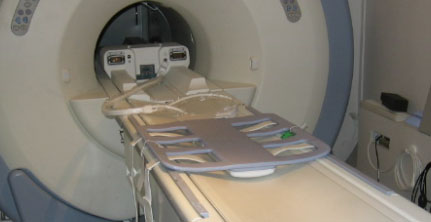
| NOTE: | Illustration 1 is for the HDx system, but the same setup is applicable to the MR450 system. The P-Connector (MR450 system) cable will go to receptacle P. |
Raise the table wings when positioning the phantoms for this setup as shown in Illustration 2. Failure to raise the table wings may cause the phantoms to roll off the table.
Illustration 2: Table Wings Raised with Coil Connected to System
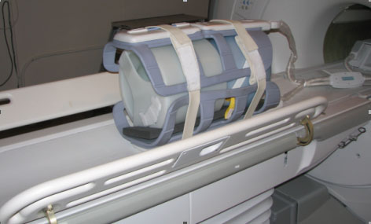
Place the phantom positioner onto the coil as shown in Illustration 3.
Illustration 3: Phantom Positioner Set on Coil
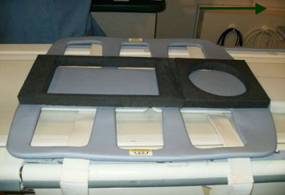
Position the cylindrical loader (P/N 2135652) onto the appropriate positioner as shown in Illustration 4.
Illustration 4: Cylindrical Loader Centered into Coil
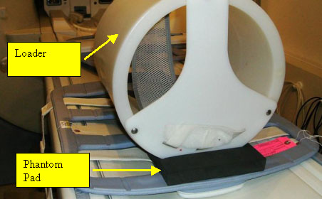
Ensure the arrow on the loader is pointing in the opposite direction from the bore (Illustration 5).
Illustration 5: Blue Spherical Phantom into Loader
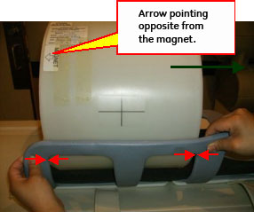
Center the loader on the coil and on the cradle, then align phantom edges with the inside corners of the coil’s frame as shown in Illustration 5.
Insert the spherical phantom (P/N 2135650) into the cylindrical loader (Illustration 6).
Illustration 6: Cylindrical Loader with Blue Spherical Phantom into Coil
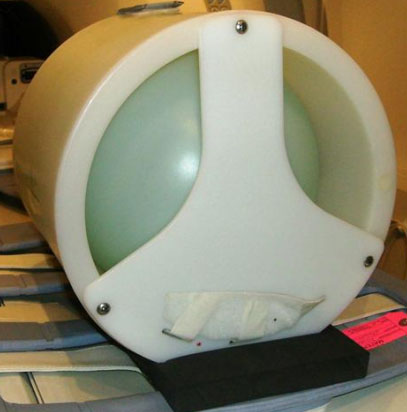
Position the center portion of LVShim phantom (P/N 2274476) onto the positioner, and ensure it touches the wall of the cylindrical loader (Illustration 7).
Illustration 7: Phantom Setup
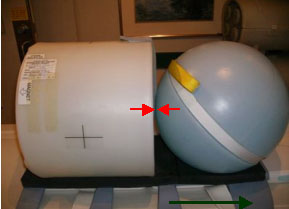
Position the anterior of the body array coil onto the phantoms, and line up the inside corners of the frame (Illustration 8).
Illustration 8: Position Anterior of Coil onto Phantom
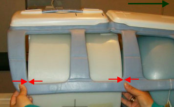
Place foam pads on the right and left side of the phantom/phantom holder to ensure the phantom will not roll off the table during setup.
Secure the coil in place using the Velcro straps. Place one strap on cylindrical loader, and fold the other strap (Illustration 9).
Illustration 9: Velcro Strap and Folded Strap at Cylindrical Loader
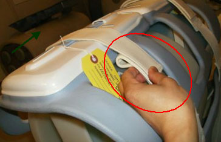
| NOTE: | Ensure that the Velcro strap is folded as shown in Illustration 9. If the strap is not folded, damage to the coil is possible when the cradle is inserted/removed from the bore. |
If the anterior connector is unplugged, plug connector into anterior of the coil (Illustration 10).
Illustration 10: Connect Anterior Connector into Anterior
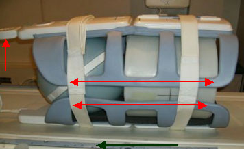
Connect the P-Connector system cable into the P port (Illustration 11).
Illustration 11: Coil Connected to System
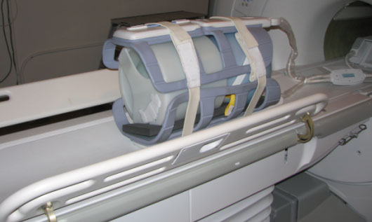
Landmark at the center landmark of the anterior part of coil as shown in Step .
After coil and phantom are properly positioned, perform Multi-Coil Quality Assurance (MCQA) Tool if available, otherwise perform the Surface Coils SNR Test.
Place the posterior section of the coil on the table. Place the TL unified phantoms over the posterior section as shown in Illustration 12 such that the phantoms are well centered on both S/I direction as shown in Illustration 13 and R/L direction as shown with arrows in Illustration 14.
Illustration 12: TL Unified Phantoms Over Posterior Section
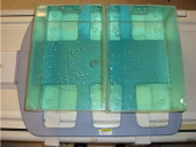
Illustration 13: TL Unified Phantoms Centered on Posterior S/I Direction
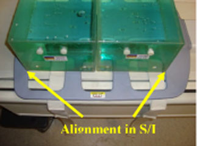
Illustration 14: TL Unified Phantoms Centered on Posterior R/L Direction
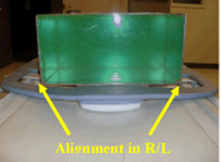
Place the anterior section on the phantoms such that the coil is well centered in both S/I and R/L directions with respect to the phantom set as shown in the Illustration 15 and Illustration 16.
Illustration 15: TL Unified Phantoms Centered on Anterior S/I Direction
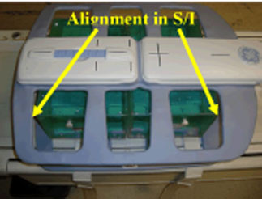
Illustration 16: TL Unified Phantoms Centered on Anterior R/L Direction
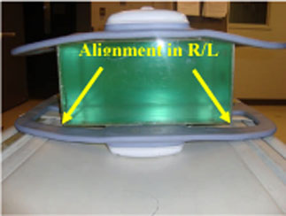
Fasten the Velcro straps so that the coil firmly snugs the phantoms.
Connect the coil to Port P of the system LPCA. Landmark the coil at the center cross mark as shown in the following illustration and advance to scan.
Illustration 17: Landmarking Coil

After coil and phantom are properly positioned, perform Multi-Coil Quality Assurance (MCQA) Tool.
No finalization steps.